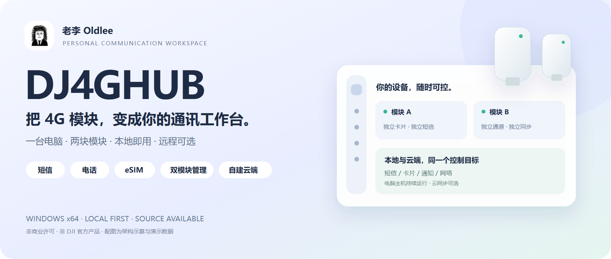
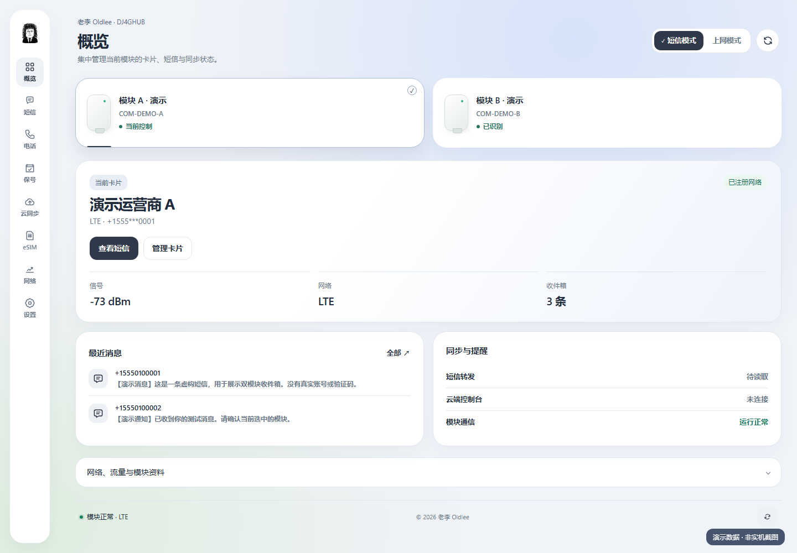
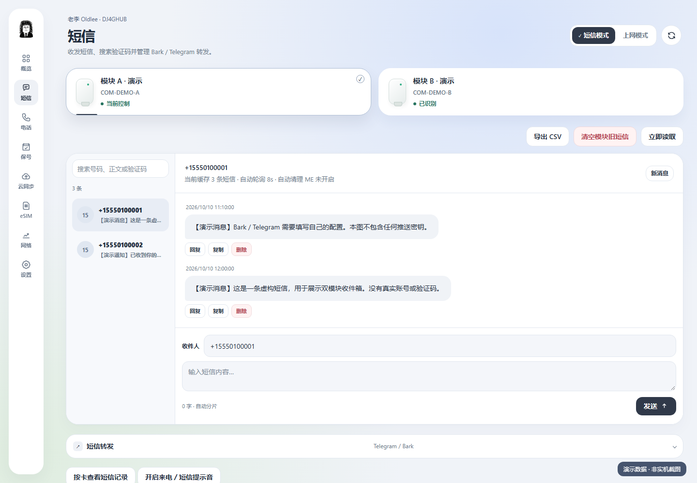
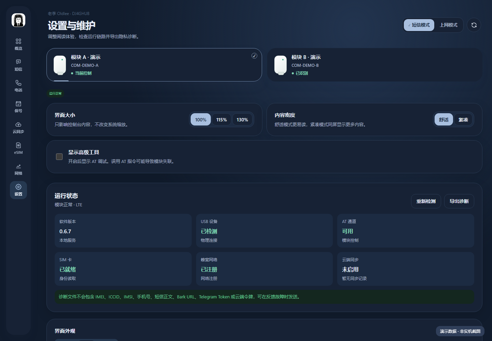
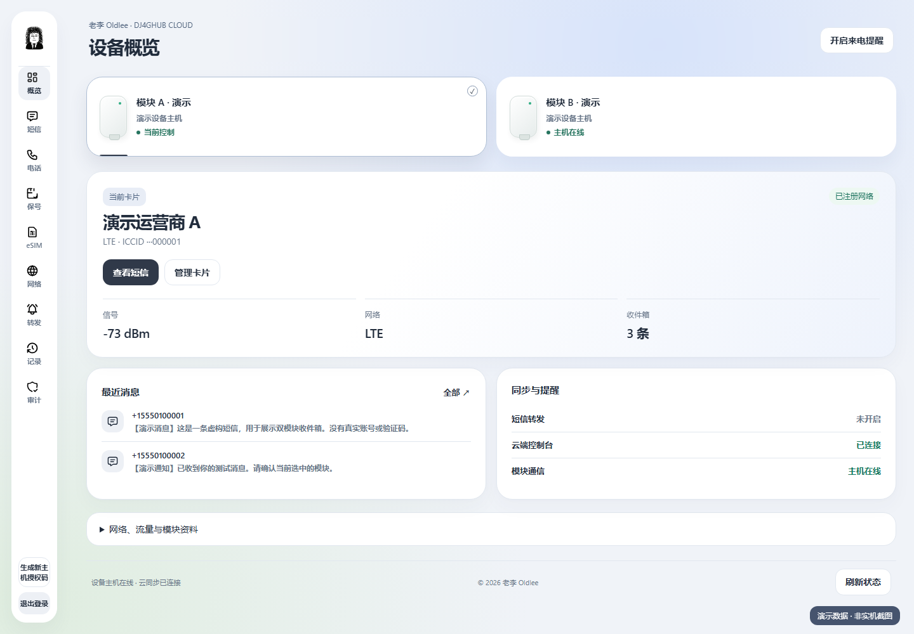
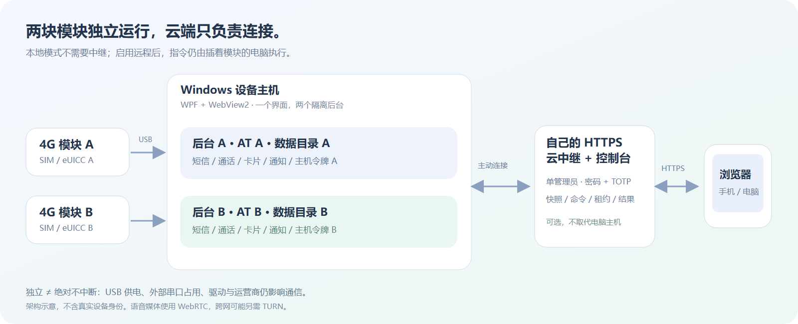

DJ4GHUB · 老李 Oldlee
一台电脑，两块模块。本地即用，远程可选。
短信 · 电话 · eSIM · 双模块 · Bark / Telegram · 自建云控制台
Windows 10 / 11 x64 ｜ Go + WPF + WebView2 ｜ 0.6.7 公开源码准备版

GitHub 仓库 · 问题反馈
快速开始 · 双模块管理 · 自建云端 · 技术细节 · 老李的 X
这是面向个人使用的源码公开版本，继承上游 PolyForm Noncommercial 1.0.0 许可，并非允许任意商用的 MIT / Apache 项目。当前尚未发布 GitHub Release；不提供公共云服务、不附带个人凭据。所有公开截图使用演示数据。
为什么做这个
模块明明插在电脑上，收短信却还要守着电脑；切换卡片时信息不更新；再接一块相同模块，又分不清正在控制谁。DJ4GHUB 把这些操作放到一个工作台里：看状态、收发短信、管理卡片，并在需要时从自己的云端接入。
它不是“把模块变成手机”的万能工具，也不替运营商解除任何限制。它解决的是：已有兼容模块如何更方便、更明确、更可控地使用。
界面预览
空间层叠布局、统一深浅色、可调字号与密度，窗口装饰和内容使用同一套主题。配图来自实际页面的演示环境，不包含真实短信、号码、卡片身份或服务器资料。
| 双模块概览 |
短信工作台 |
 |
 |
| 深色设置 |
云端控制台 |
 |
 |
能做什么
| 功能 |
本地 Windows |
可选云控制台 |
使用边界 |
| 模块、SIM、信号、网络状态 |
✓ |
✓ |
状态来自设备；断电或离线不能通信 |
| 双模块识别、切换与独立数据 |
✓ |
✓ |
两块实机已做过验证；不是保证任意数量 |
| 短信收件箱、发送、单条删除 |
✓ |
✓ |
操作可能产生运营商费用；删除不可撤销 |
| 拨号、接听、挂断、DTMF |
✓ |
✓ |
SIM、运营商、固件必须支持语音 |
| 通话音频桥接 |
USB 音频 |
WebRTC |
需兼容音频设备；跨网可能需要 TURN |
| eSIM 二维码解析、Profile 下载/启停/改名/删除 |
✓ |
✓ |
必须插入兼容 eUICC；普通实体 SIM 不支持 |
| Bark / Telegram 新短信通知 |
✓ |
✓ 配置 |
自备密钥；短信内容会发给对应推送服务 |
| 保号提醒与记录 |
✓ |
✓ |
辅助提醒，不自动充值，不保证满足各运营商条款 |
| APN / 网络配置、联网状态 |
✓ |
✓ 主要管理操作 |
Windows 路由和适配器仍由本机执行 |
| 高级 AT 调试 |
默认隐藏 |
未提供默认界面入口 |
只给明确知道指令影响的人使用 |
| UI、主机诊断、开机自启、托盘 |
✓ |
部分显示/操作不同 |
原生窗口、托盘、自启不是浏览器功能 |
云端覆盖主要模块管理流程，不等于浏览器具有 Windows 原生功能。 具体对照见功能与限制。云端不是脱离设备的模拟器：操作最终仍由插着模块的电脑执行。
三步开始本地使用
- 在 Windows 10/11 x64 上准备兼容 DJI 4G 模块、稳定 USB 供电、已签名 USB/AT 驱动和 WebView2 Runtime。
- 使用未来 Release 的完整便携包，或按下面命令构建。完整解压后双击
DJ4Hub.Windows.exe，不要单独复制 EXE。
- 插入一块或两块模块，选择模块卡片，即可查看状态和收件箱。先用低风险读取操作确认识别，再自行测试短信与电话。
不启用云同步也能正常使用本地功能。 默认云地址为空、主机同步关闭；本地后台只监听 127.0.0.1。
从源码构建 Windows 包
需要 Git、Go（版本见 go.mod）和 .NET 8 SDK。以下命令在 Windows PowerShell 中执行：
# 下载/克隆本仓库后，先进入仓库根目录
./scripts/audit-public.ps1
./scripts/build-windows.ps1
# 完成后启动 dist/windows/portable/DJ4Hub.Windows.exe
源码公开包本身不是可直接双击的安装包。构建不会安装驱动，也不会把用户私人数据打进程序。
更多首次使用、通知配置与 eSIM 步骤，见完整使用指南。
两块模块，为什么不只是“两个按钮”

每块模块都有独立后台进程、AT 通道、数据目录和云端主机身份。切换页面只是切换当前控制对象，不会把 A 的短信当成 B 的短信。一个主机恢复时，另一个主机可以继续工作。
初次发现第二块模块时，会在本机复制已有的通知设置作为默认值；之后两块模块的通知配置独立，云同步也必须分别启用。 公开包不会预绑定任何人的 Bark 或 Telegram。
查看双模块完整说明 →
想在手机上远程用？自建云端是可选项
设备主机主动连自己的 HTTPS 中继，浏览器访问 /panel/。不需要把本机 AT 服务暴露到公网，也不需要给电脑做端口转发。
仓库提供 Docker Compose + Caddy 部署模板，准备好 Linux 服务器、域名和 Docker 后：
cd deploy/selfhost
cp .env.example .env
# 编辑 .env：填写自己的域名和 ACME 邮箱
docker compose up -d --build
控制台使用密码和 TOTP；Windows 主机首次注册使用服务器生成的 owner.token。两者不是同一个密码。部署、凭据读取、双模块绑定、备份与更新见自建云端指南。
中继是单管理员/个人实例，不是多用户 SaaS。Docker 模板本机未做真实公网部署验证；CI 提供构建检查，正式使用前仍需在自己的服务器验证 HTTPS、登录、注册和完整操作链路。语音跨网络场景另需检查 TURN。
稳定性与安全，具体做了什么
- 串口所有权互斥、限定设备发现范围，避免本软件的扫描和主机互相争抢。
- 每模块独立健康检查、故障恢复与退避；父进程退出后清理所属后台。
- 云端变更命令落盘去重；异常时不盲目重发短信或拨号，结果不明需人工核对。
- SIM 信息读取失败视为“未知”，不把临时错误直接当成“没插卡”。
- HTTPS、密码 + TOTP、会话和命令权限检查；云端持久化状态使用 AES-GCM。
- 发布前使用独立脱敏目录，排除私人配置、运行数据、旧日志、备份和原仓库 Git 历史。
这些是设计措施和已实现的保护，不是“永不掉线”的保证。USB 供电、第三方串口工具、驱动和运营商仍会影响实际使用。隐私说明 · 安全说明
文档入口
| 想了解什么 |
阅读这里 |
| 安装、首次使用、短信、eSIM、通知 |
快速开始 |
| 模块识别、切换、绑定、故障隔离 |
双模块管理 |
| 云端部署、凭据、TLS、备份、TURN |
自建云端 |
| 进程、串口、API、数据一致性、安全 |
技术细节 |
| 不识别、普通 SIM 报错、离线、音频 |
常见问题 |
| 数据去哪、哪些不上传、通知风险 |
隐私说明 |
| 许可来源、商业使用限制 |
源码与许可 |
| 首次上传 GitHub 的检查步骤 |
发布清单 |
| 参与开发、回归与配图更新 |
贡献指南 |
源码现发布于 Oldleeo/DJ4GHUB。构建状态以 GitHub Actions 为准；尚未提供正式二进制 Release。
版权与致谢
© 2026 老李 Oldlee，本版本的品牌、界面与新增贡献。作者 X：@oldleeoo。
本项目含上游 VoHive 衍生代码，保留必需声明：Copyright iniwex5（VoHive）；另参考 DJOneHub 的相关工作。完整条款见 LICENSE 与 THIRD_PARTY_NOTICES.md。第三方图标与库保留各自许可。
DJI / 大疆及相关名称、商标属于其权利人。DJ4GHUB 不是 DJI 官方软件，不隶属于 DJI，也未声明获得其认证。老李 IP 头像及品牌素材不自动授予独立商业使用或冒充作者的权利；权利说明见许可文档。
本地 README 排版预览 · GitHub 实际渲染可能略有不同 · 配图均为演示数据